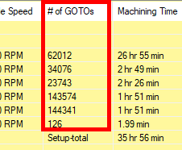
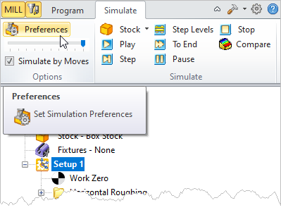
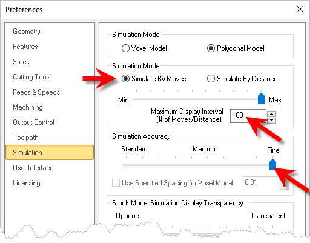
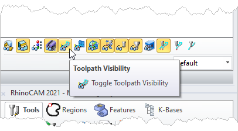
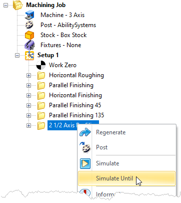

|
<< Click to Display Table of Contents >> Navigation: VisualCAM FAQs > System Performance > How to: Speed Up Cut Material Simulations |
The default simulation preferences are for typically sized parts. If you have a large part such as auto body panel for example, that is larger than usual, here are some things you can do to speed up your cut material simulations.
1.Close all sessions of your CAD program (VisualCAD/CAM, Rhino or SOLIDWORKS).
2.Run the CAD program again and load the MecSoft CAM plug (VisualCAD/CAM, RhinoCAM or VisualCAM for SW).
3.Check to see how many GOTO motions are in each of your operations. You can do this by selecting the setup, right-click and pick Information.
Look at the Information dialog and see the # of GOTOs column.
In the example below, the total # of GOTOs is over 400,000.
 GOTO Information |
4.Now go to the Simulation Preferences. (Pick Preferences from the Simulate tab).
 Simulation > Preferences |
5.Look at the Simulation Model located at the top of the dialog. If you select Voxel, this is the fastest method but the least accurate display. If you select Polygonal, the simulation will be slower but a more accurate display.
 Simulation Preferences |
6.For our example of 400,000 GOTO motions, we will set the Simulation Mode to Simulate By Moves and then set the Maximum Display Interval (# of Moves/Distance) to 100000 (one hundred thousand). This means that during the simulation, the display of the in-process stock model is only updated after every 100,000 GOTO motions.
7.You can also speed up or slow down the simulation by adjusting the Simulation Accuracy slider.
8.Also, make sure you are only displaying one view port such as Perspective view. Having multiple view ports displayed during simulations, will consume a bit more resources.
9.Also, having the toolpath display toggle ON (show the toolpaths) will speed up the simulation some.
 Toolpath Display Toggle |
10.Now select the last operation in your setup, right-click and select Simulate Until from the menu.
 Sumulate Until menu selection |
11.You will need to wait on the simulation. If the CAD program seems to become frozen or unresponsive, give it time.
12.Feel free to adjust the settings we mention here to YOUR best results.